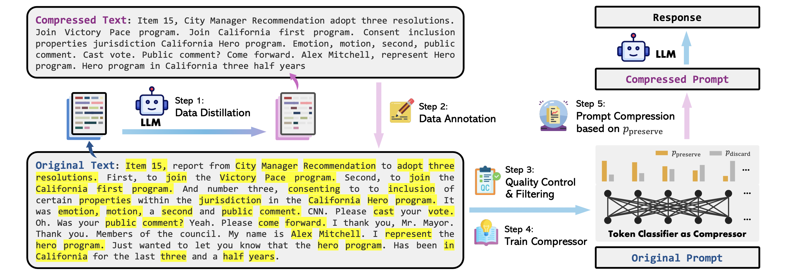
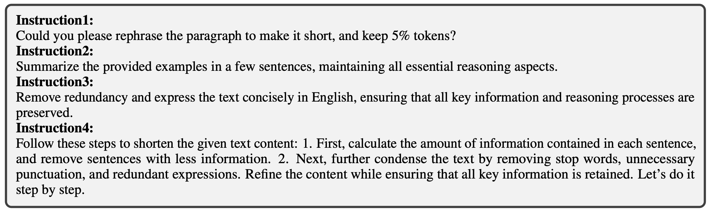
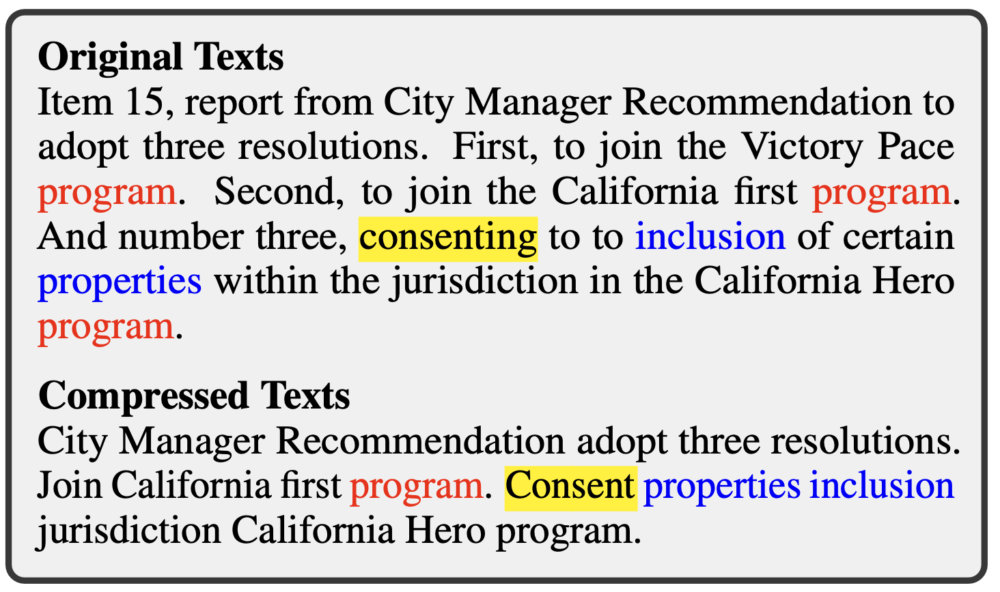
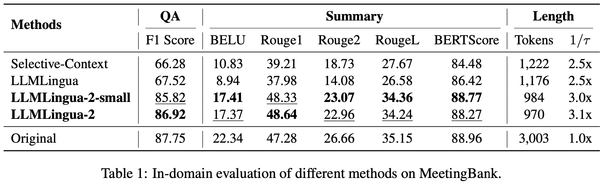
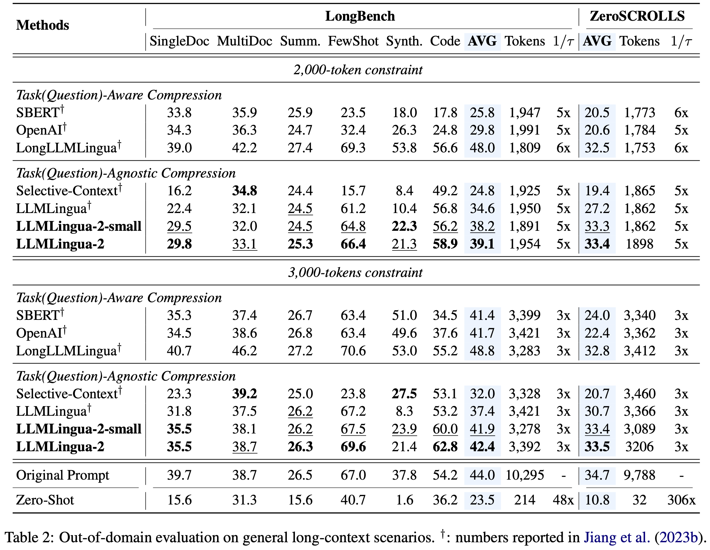
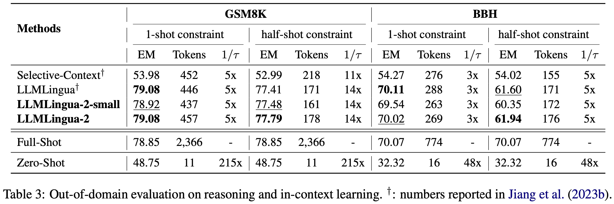
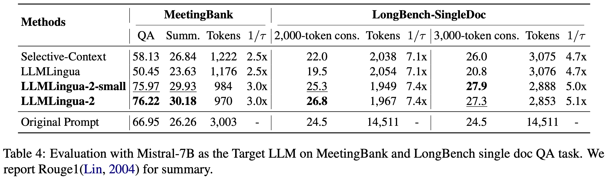

LLMLingua-2: Data Distillation for Efficient and Faithful Task-Agnostic Prompt Compression #
LLMLingua-2: Data Distillation for Efficient and Faithful Task-Agnostic Prompt Compression
Zhuoshi Pan1, Qianhui Wu2, Huiqiang Jiang2, Menglin Xia2, Xufang Luo2, Jue Zhang2, Qingwei Lin2, Victor Rühle2, Yuqing Yang2, Chin-Yew Lin2, H. Vicky Zhao1, Lili Qiu2, and Dongmei Zhang2
1Tsinghua University, 2Microsoft Corporation
This blog post is written by Seungjoo Shin, and Sua Choi

Summary #
This paper introduces a novel approach, LLMLingua-2, for task-agnostic prompt compression to enhance the generalizability and efficiency of LLMs. It highlights the limitations of existing methods that rely on information entropy and proposes a data distillation procedure to create a more effective compression algorithm. This approach ensures essential information is preserved, leading to significant performance improvements and reduced computational overhead.
1. Introduction #
What is Prompt Compression? #
A straightforward solution to shorten the original prompts without losing essential information.
-
Task-aware Prompt Compression
- Prompt compression methods that aim to generate compressed prompts tailored to the specific task or query.
→ Lack of efficiency and generalizability due to the dependency on task-specific features.
-
Task-agnostic Prompt Compression
- Prompt compression methods for better generalizability and efficiency with the underlying assumption that natural language contains redundancy [1] that may be useful for human understanding but might not be necessary for LLMs.
- Compress prompts by removing tokens [2] or lexical units [3] according to their information entropy obtained from a causal small language model (SLM), regardless of the downstream task or question information.
→ Typically adopt information entropy-based metrics which are empirical.
→ Only leverage unidirectional context, which may fail to capture all essential information needed for prompt compression within the context.
Key Challenges #
-
Dataset Alignment: How can we identify or build a suitable dataset to align the Small Language Model (SLM) towards effective prompt compression?
→ An extractive text compression dataset that retains essential information (Sec. 2).
-
Compression Algorithm Design: How can we design a compression algorithm that effectively leverages the full bidirectional context for better performance?
→ Prompt compression as a binary token classification problem using Transformer encoder (Sec. 3).
2. Dataset Construction #
Data Distillation #
Extracting knowledge from an LLM (GPT-4) to compress texts without losing crucial information or introducing hallucinated content.
Goal: To prompt GPT-4 to generate compressed texts from original texts that meet the following criteria:
-
Token reduction: Compressed prompts should be short in length to reduce cost and speed up inference.
-
Informativeness: Essential information should be retained.
-
Faithfulness: Compressed prompts should remain faithful and avoid introducing hallucinated content to ensure accuracy when prompting LLMs in downstream tasks.
Instruction Design #
- Remove the compression ratio restriction & Prompt to compress the origin text as short as possible
Chunk-Wise Compression #
- Segment each long context into multiple chunks, each containing no more than 512 tokens and ending with a period.
Compared to Instructions of LLMLingua [2] #
Data Annotation #
Assigning binary labels to each word (or token) in the original text to indicate whether it should be preserved or discarded after compression, leveraging the distilled knowledge from the LLM.
Challenges in Data Annotation #
LLMLingua-2 addresses challenges of ambiguity, variation, and reordering as:
-
Ambiguity: a word in the compressed texts may appear multiple times in the original content.
-
Variation: GPT-4 may modify the original words in tense, plural form, etc. during compression.
-
Reordering: The order of words may be changed after compression.
Overall Procedure of the Annotation Algorithm: #

Quality Control #
Introducing metrics to filter low-quality samples, ensuring high-quality dataset construction.
Notations: #
- \(\mathbb{S}_{comp}\) : the set of words in the compressed text.
- \(\mathbb{S}_{ori}\) : the set of words in the original text.
- | · |: the cardinality of a set.
-
\(l(·)\)
: the annotation function.
- e.g., \(l(w) = True\) signifies that word \(w \in \mathbb{S}_{ori}\) corresponds to a word in \(\mathbb{S}_{comp}\) .
Variation Rate (VR) #
-
A metric to evaluate the quality of the compressed texts generated from data distillation.
Variation Rate (VR) is defined as: \[ \begin{equation} VR = \frac{1}{|\mathbb{S}_{comp}|} \displaystyle\sum_{w \in \mathbb{S}_{comp}} \mathbb{I}(w \notin \mathbb{S}_{ori}). \end{equation} \]
-
LLMLingua-2 excludes the examples with the top 5% highest variation rates.
Alignment Gap (AG) #
-
A metric to evaluate the quality of the automatically annotated labels.
Alignment Gap (AG) is defined as: \[ \begin{equation} AG = \frac {1}{|\mathbb{S}_{ori}|} \displaystyle\sum_{w \in \mathbb{S}_{comp}} \mathbb{I}(w \in \mathbb{S}_{ori}) - \frac{1}{|\mathbb{S}_{ori}|} \displaystyle\sum_{w \in \mathbb{S}_{ori}} \mathbb{I}(l(w) = True). \end{equation} \]
-
LLMLingua-2 discards examples of the highest 10% alignment gap.
3. Compressor #
They formulate prompt compression as a binary token classification problem (i.e., preserve or discard) to guarantee the faithfulness of the compressed prompt to the original content, and meantime ensure the low latency of the compression model itself.
Token Classification Model #
Architecture #
They utilize a Transformer encoder [10] as the feature encoder \(f_\theta\) and add a linear classification layer on top. Given an original prompt consisting of \(N\) words \(\boldsymbol{x} = \{x_i\}_{i=1}^{N}\) , this can be formulated as: \[\begin{gather} \boldsymbol{h} = f_{\theta}(\boldsymbol{x}), \\ p(x_i,\Theta) = \mathrm{softmax}(Wh_i +b), \end{gather}\] where \(\boldsymbol{h}=\{h_i\}_{i=1}^{N}\) denotes feature vectors for all words, \(p(x_i, \Theta) \in \mathbb{R}^2\) denotes the probability distribution of labels \(\{\mathtt{preserve}, \mathtt{discard}\}\) for the \(i\) -th word \(x_i\) , and \(\Theta = \{\theta, W, b\}\) represent all the trainable parameters.
Training #
Let \(\boldsymbol{y} = \{y_i\}_{i=1}^{N}\) denote the corresponding labels for all words in \(\boldsymbol{x}\) , then they employ cross entropy loss to train the model. The loss function \(\mathcal{L}\) w.r.t. \(\boldsymbol{x}\) is:
\[\begin{equation} \mathcal{L}(\Theta) = \frac{1}{N} \displaystyle\sum_{i=1}^{N}\mathrm{CrossEntropy}(y_i, p(x_i, \Theta)). \end{equation}\]Compression Strategy #
Compressing the original prompt \(\boldsymbol{x} = \{x_i\}_{i=1}^N\) with a target compression ratio \(1/\tau\) , where \(\tau\) is defined as the quotient of the number of words in the compressed prompt and the number of words in the original prompt \(\boldsymbol{x}\) .
-
They derive the target number of tokens to be preserved in the compressed prompt \(\tilde {\boldsymbol{x}} : \tilde{N} = \tau N\) .
-
Next, they use the token classification model to predict the probability \(p_i\) of each word \(x_i\) being labeled as \(\mathtt{preserve}\) .
-
Finally, they retain the top \(\tilde{N}\) words in the original prompt \(\boldsymbol{x}\) with the highest \(p_i\) and maintain their original order to form the compressed prompt \(\tilde{\boldsymbol{x}}\) .
4. Experiments #
Experimental Setup #
- Dataset: MeetingBank [4]
- Evaluation:
- Backbone: xlm-roberta-large (LLMLingua-2) [9], multilingual-BERT (LLMLingua-2-small) [10]
Results on In-Domain Benchmark #
Demonstrates significant performance gains on MeetingBank for both summarization and QA tasks.
Results on Out-of-Domain Benchmarks #
Shows robust generalization across various benchmarks, including LongBench, ZeroScrolls, GSM8K, and BBH.
 Mistral-7B as the Target LLM #
Demonstrates good generalization ability across target LLMs.
5. Conclusion #
The LLMLingua-2 model provides an efficient, task-agnostic solution for prompt compression, significantly reducing computational overhead while maintaining the integrity and usefulness of the compressed prompts.
6. Discussion #
The compressed dataset was constructed only on the training samples from a single benchmark (MeetingBank [4]). In this sense, one of the probable research directions would be generalizing the proposed compression approch in terms of scale or target domain (task).
Reference #
[1] Claude E Shannon. 1951. Prediction and entropy of printed english. Bell system technical journal, 30(1):50–64.
[2] Huiqiang Jiang, Qianhui Wu, Chin-Yew Lin, Yuqing Yang, and Lili Qiu. 2023a. LLMLingua: Compressing prompts for accelerated inference of large language models. In Proceedings of the 2023 Conference on Empirical Methods in Natural Language Processing, pages 13358–13376, Singapore. Association for Computational Linguistics.
[3] Yucheng Li, Bo Dong, Frank Guerin, and Chenghua Lin. 2023. Compressing context to enhance inference efficiency of large language models. In Proceedings of the 2023 Conference on Empirical Methods in Natural Language Processing, pages 6342–6353, Singapore. Association for Computational Linguistics.
[4] Yebowen Hu, Tim Ganter, Hanieh Deilamsalehy, Franck Dernoncourt, Hassan Foroosh, and Fei Liu. 2023. Meetingbank: A benchmark dataset for meeting summarization. ArXiv preprint, abs/2305.17529.
[5] Yushi Bai, Xin Lv, Jiajie Zhang, Hongchang Lyu, Jiankai Tang, Zhidian Huang, Zhengxiao Du, Xiao Liu, Aohan Zeng, Lei Hou, et al. 2023. Longbench: A bilingual, multitask benchmark for long context understanding. ArXiv preprint, abs/2308.14508.
[6] Uri Shaham, Maor Ivgi, Avia Efrat, Jonathan Berant, and Omer Levy. 2023. Zeroscrolls: A zero-shot benchmark for long text understanding. ArXiv preprint, abs/2305.14196.
[7] Karl Cobbe, Vineet Kosaraju, Mohammad Bavarian, Mark Chen, Heewoo Jun, Lukasz Kaiser, Matthias Plappert, Jerry Tworek, Jacob Hilton, Reiichiro Nakano, et al. 2021. Training verifiers to solve math word problems. ArXiv preprint, abs/2110.14168.
[8] BIG bench authors. 2023. Beyond the imitation game: Quantifying and extrapolating the capabilities of language models. Transactions on Machine Learning Research.
[9] Alexis Conneau, Kartikay Khandelwal, Naman Goyal, Vishrav Chaudhary, Guillaume Wenzek, Francisco Guzmán, Edouard Grave, Myle Ott, Luke Zettlemoyer, and Veselin Stoyanov. 2020. Unsupervised cross-lingual representation learning at scale. In Proceedings of the 58th Annual Meeting of the Association for Computational Linguistics, pages 8440–8451, Online. Association for Computational Linguistics.
[10] Jacob Devlin, Ming-Wei Chang, Kenton Lee, and Kristina Toutanova. 2019. BERT: Pre-training of deep bidirectional transformers for language understanding. In Proceedings of the 2019 Conference of the North American Chapter of the Association for Computational Linguistics: Human Language Technologies, Volume 1 (Long and Short Papers), pages 4171–4186, Minneapolis, Minnesota. Association for Computational Linguistics.